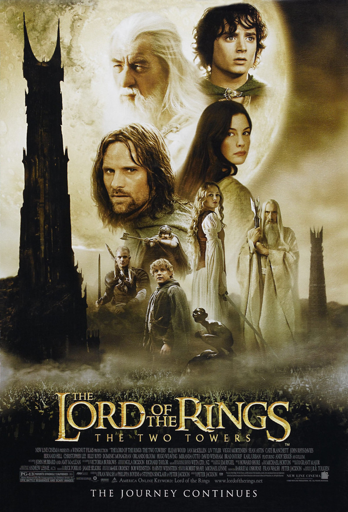

El Señor de los Anillos: La Comunidad del Anillo
- Año: 2001
- Duración: 180 min.
- País: Nueva Zelanda
- Dirección: Peter Jackson
- Reparto:
Elijah Wood, Ian McKellen, Viggo Mortensen, Sean Astin, Sean Bean, John Rhys-Davies, Orlando Bloom, Dominic Monaghan, Billy Boyd, Cate Blanchett, Hugo Weaving, Liv Tyler, Ian Holm, Christopher Lee, Lawrence Makoare, Craig Parker, Andy Serkis, Marton Csokas.
- Género: Fantástico. Aventuras. Acción

El Señor de los Anillos: Las Dos Torres
- Año: 2002
- Duración: 179 min.
- País: Nueva Zelanda
- Dirección: Peter Jackson
- Reparto:Elijah Wood, Viggo Mortensen, Ian McKellen, Sean Astin, Andy Serkis, John Rhys-Davies, Orlando Bloom, Bernard Hill, Miranda Otto, David Wenham, Dominic Monaghan, Billy Boyd, Christopher Lee, Liv Tyler, Karl Urban, Brad Dourif, Hugo Weaving, Cate Blanchett, Craig Parker, John Leigh, Sean Bean, John Noble.
- Género: Fantástico. Aventuras. Acción

El Señor de los Anillos: El Retorno del Rey
- Año: 2003
- Duración: 201 min.
- País: Nueva Zelanda
- Dirección: Peter Jackson
- Reparto: Elijah Wood, Viggo Mortensen, Ian McKellen, Sean Astin, Andy Serkis, John Rhys-Davies, Orlando Bloom, John Noble, Miranda Otto, David Wenham, Bernard Hill, Billy Boyd, Dominic Monaghan, Liv Tyler, Karl Urban, Christopher Lee, Brad Dourif, Ian Holm, Hugo Weaving, Cate Blanchett, Lawrence Makoare, Marton Csokas, Sean Bean.
- Género: Fantástico. Aventuras. Acción.